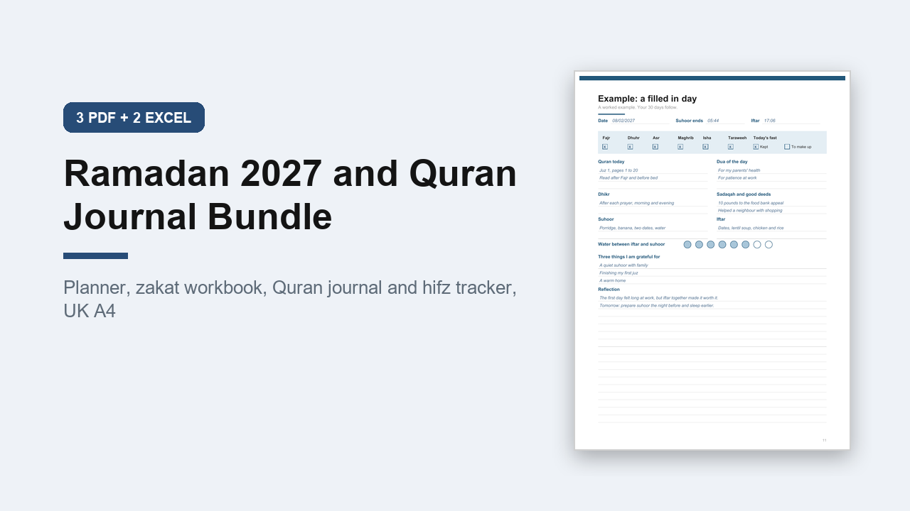

Ramadan 2027 and Quran Journal Bundle UK, A4 Printables with Excel Trackers
GBP 10.00 · instant digital download

The Ramadan 2027 planner and the Quran journal in one download, with their two Excel workbooks and a short guide that shows how to use them together from late December to after Eid.
A4 paper, UK spelling, and zakat in pounds with Gift Aid.
Ramadan is expected to begin around 8 February 2027, so the daily pages are undated for the moon sighting.
No Quran text or translation is included: surah names and ayat counts only.
What you get: 5 files, 3 printable A4 PDFs (not editable) and 2 editable Excel workbooks (.xlsx).
1.
Ramadan Planner 2027, PDF, 55 pages: getting ready checklist, goals, 30 daily pages, a juz tracker, meal plans, iftar hosting, the last ten nights, an Eid checklist and a giving record.
2.
Zakat and Giving workbook, Excel, 5 sheets: zakat with a silver or gold nisab, Zakat al-Fitr, a giving log with Gift Aid, and Eid gifts.
3.
Quran Journal, PDF, 71 pages: goals, trackers for 114 surahs and 30 juz, reading logs, a hifz plan, weekly hifz planners, 30 surah reflection pages and khatm records.
4.
Quran and Hifz Tracker, Excel, 7 sheets: all 114 surahs, days since revised and a revision rota.
5.
Bundle guide, PDF, 7 pages: a six week run-up plan, a 30 day reading and revision plan and an after Ramadan page.
Both products are also sold on their own; this is the same files together for less.
Opens in Excel, Google Sheets and Numbers.
Digital download, nothing is posted.
An organiser only, not religious advice and not financial advice..
What happens after you buy
Payment and delivery are handled by Gumroad. You get the download straight after paying, and a copy of the link by email. Nothing is posted to you.
Tags: ramadan planner, ramadan 2027, quran journal, hifz tracker, zakat calculator, islamic planner, ramadan bundle, quran tracker, a4 printable, eid planner